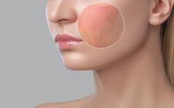
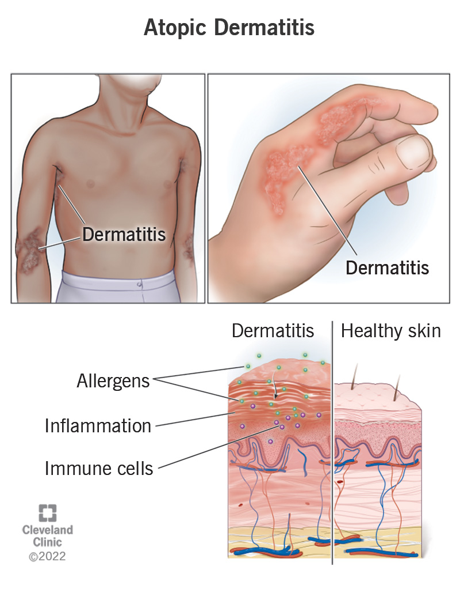

Atopic Dermatitis
Understanding Atopic Dermatitis: Causes, Types, and Effective Treatments
What is Atopic Dermatitis?
Atopic Dermatitis (AD), commonly referred to as eczema, is a chronic skin condition characterized by dry, inflamed, and itchy skin. It is a form of dermatitis that affects both children and adults, though it typically begins in childhood. While not contagious, atopic dermatitis can severely impact quality of life.


Symptoms of Atopic Dermatitis
- Dry, Scaly Skin: Rough, cracked skin texture.
- Itching: Intense, often at night.
- Red, Inflamed Skin: Visible on face, neck, elbows, and knees.
- Thickened Skin: Chronic scratching leads to lichenification.
- Oozing and Crusting: Severe cases may include fluid discharge.
- Discoloration: Hyperpigmented or hypopigmented areas.
Causes of Atopic Dermatitis
- Genetics: Family history of eczema or asthma increases risk.
- Immune System: Overactive response to environmental triggers.
-
Environmental Factors:
- Irritants: Soaps, detergents, and fragrances.
- Allergens: Dust mites, pollen, and pet dander.
- Weather: Dry air or excessive heat worsens symptoms.
- Stress: Emotional stress exacerbates symptoms.
- Skin Barrier Dysfunction: Compromised moisture retention.
